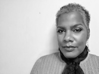
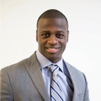
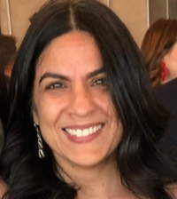
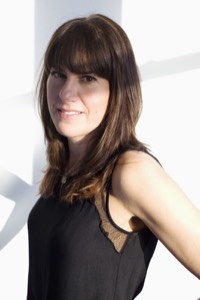
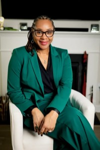
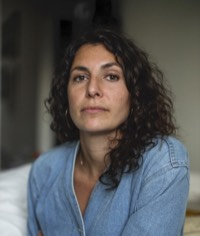

PBS
178 people whose festival biography mentions PBS. A mention can mean a job, a past job, a grant, a broadcast or an award: read the bio for which.


 Theodore FrankPanelist, festival team, workshop leader · 7 editions, 2017–2025Arnold & Porter Kaye Scholer (retired partner)
Theodore FrankPanelist, festival team, workshop leader · 7 editions, 2017–2025Arnold & Porter Kaye Scholer (retired partner) Natalie Bullock BrownPanelist, moderator · 6 editions, 2019–2026Documentary Accountability Working Group
Natalie Bullock BrownPanelist, moderator · 6 editions, 2019–2026Documentary Accountability Working Group
 Amanda PikePanelist, filmmaker, moderator · 6 editions, 2019–2025The Center for Investigative Reporting
Amanda PikePanelist, filmmaker, moderator · 6 editions, 2019–2025The Center for Investigative Reporting

 Steve SapienzaPanelist · 4 editions, 2017–2025
Steve SapienzaPanelist · 4 editions, 2017–2025
 Nina AlvarezPanelist · 3 editions, 2021–2026
Nina AlvarezPanelist · 3 editions, 2021–2026 Lyric CabralPanelist, filmmaker · 3 editions, 2015–2017
Lyric CabralPanelist, filmmaker · 3 editions, 2015–2017 Erika CohnFilmmaker, panelist · 3 editions, 2020–2024
Erika CohnFilmmaker, panelist · 3 editions, 2020–2024


 Simon KilmurryModerator, panelist, filmmaker · 3 editions, 2016–2025International Documentary Association
Simon KilmurryModerator, panelist, filmmaker · 3 editions, 2016–2025International Documentary Association Violeta AyalaFilmmaker, panelist · 2 editions, 2017–2021
Violeta AyalaFilmmaker, panelist · 2 editions, 2017–2021
- Caty Borum ChattooModerator, panelist · 2 editions, 2015–2017School of Communication, American University

- Heather CourtneyPanelist, filmmaker · 2 editions, 2017–2018
- Ramona DiazFilmmaker, panelist · 2 editions, 2019–2020

Lana GarlandFestival team, moderator · 2 editions, 2023–2024
- Johanna HamiltonFilmmaker, panelist, workshop leader · 2 editions, 2015–2018
- Judith HelfandPanelist, workshop leader, festival team · 2 editions, 2021–2022Chicken & Egg Pictures


 Ines Hofmann KannaWorkshop leader, panelist · 2 editions, 2017–2021
Ines Hofmann KannaWorkshop leader, panelist · 2 editions, 2017–2021- Brian KnappenbergerPanelist · 2 editions, 2015–2017


 Elizabeth LoFilmmaker, panelist · 2 editions, 2021–2024
Elizabeth LoFilmmaker, panelist · 2 editions, 2021–2024 Ben LoetermanPanelist, filmmaker · 2 editions, 2024–2025
Ben LoetermanPanelist, filmmaker · 2 editions, 2024–2025

 Rachel Lauren Mueller · Anne Sundberg · Yoruba RichenFilmmaker, panelist · 2 editions, 2022–2026
Rachel Lauren Mueller · Anne Sundberg · Yoruba RichenFilmmaker, panelist · 2 editions, 2022–2026 Andy SarjahaniFilmmaker · 2 editions, 2023–2024
Andy SarjahaniFilmmaker · 2 editions, 2023–2024- Nancy SchwartzmanPanelist, filmmaker · 2 editions, 2018–2019
 Jiayan "Jenny" ShiPanelist, filmmaker · 2 editions, 2020–2021
Jiayan "Jenny" ShiPanelist, filmmaker · 2 editions, 2020–2021
- Ryan WhiteFilmmaker, panelist · 2 editions, 2017–2020

 Alan AdelsonPanelist · 2021
Alan AdelsonPanelist · 2021 Lynne AdrineModerator · 2024
Lynne AdrineModerator · 2024 Macky AlstonFilmmaker, panelist · 2024
Macky AlstonFilmmaker, panelist · 2024 Tetiana Anderson2021
Tetiana Anderson2021
Lawrence BartleyPanelist · 2021- Jeff BemissFilmmaker · 2020
 Bonnie BertramPanelist, filmmaker · 2026
Bonnie BertramPanelist, filmmaker · 2026- Alexis BloomFilmmaker, panelist · 2018
 Jimmie Briggs2023
Jimmie Briggs2023 Yoni BrookPanelist · 2021
Yoni BrookPanelist · 2021 Michael CascioPanelist · 2021
Michael CascioPanelist · 2021
 Alex ClarkPanelist · 2023
Alex ClarkPanelist · 2023- Will CohenFilmmaker · 2018
- Luisa ConlonFilmmaker · 2018
- Traci A. CurryFilmmaker, panelist · 2021
- Kyra DarntonPanelist · 2026

- Rodrigo DorfmanPanelist · 2019
 Juliane DressnerFilmmaker · 2026
Juliane DressnerFilmmaker · 2026- Heidi EwingFilmmaker · 2017
 Violet Du FengPanelist · 2021
Violet Du FengPanelist · 2021 Luchina FisherFilmmaker · 2023
Luchina FisherFilmmaker · 2023
Marisa FoxPanelist, filmmaker · 2026 Jen GatienFilmmaker, panelist · 2024
Jen GatienFilmmaker, panelist · 2024
 Rick GoldsmithFilmmaker · 2023
Rick GoldsmithFilmmaker · 2023 David E. GuggenheimModerator · 2025
David E. GuggenheimModerator · 2025 Nathan HalversonFilm subject, panelist · 2022
Nathan HalversonFilm subject, panelist · 2022
Christalyn HamptonFilmmaker · 2026- Erika HowardPanelist · 2020
- Jennifer HuangPanelist · 2019
- Brent HuffmanFilmmaker · 2022

 Eugene JareckiPanelist, filmmaker · 2025
Eugene JareckiPanelist, filmmaker · 2025 Jeffrey JohnsonFilmmaker · 2022
Jeffrey JohnsonFilmmaker · 2022 Linda JuePanelist · 2021
Linda JuePanelist · 2021 Leen KaradshehPanelist · 2022
Leen KaradshehPanelist · 2022


 Yvonne Ashley KouadjoPanelist · 2021
Yvonne Ashley KouadjoPanelist · 2021 Rachel LearsPanelist · 2021
Rachel LearsPanelist · 2021
 Beth LevisonFilmmaker, panelist · 2021
Beth LevisonFilmmaker, panelist · 2021 Annukka Lilja2026
Annukka Lilja2026- Loira LimbalFilmmaker · 2020
- Shola LynchWorkshop leader · 2018Schomburg Center for Research in Black Culture, The New York Public Library
- Stephen MaingPanelist · 2018
 Zac ManuelFilmmaker · 2021
Zac ManuelFilmmaker · 2021- Amy MarquisPanelist · 2019
 Evan MascagniPanelist · 2023
Evan MascagniPanelist · 2023- Doyle McManusPanelist · 2018
 Samuel-Ali MirpoorianFilmmaker · 2024
Samuel-Ali MirpoorianFilmmaker · 2024- Lisa MolomotFilmmaker · 2020

Jenni MorelloPanelist · 2021 Beth MurphyPanelist · 2021
Beth MurphyPanelist · 2021- Marilyn NessPanelist · 2018
 Arionne Nettles2021
Arionne Nettles2021- Thor NeureiterPanelist · 2015
 Mark ObenhausFilmmaker, panelist · 2025
Mark ObenhausFilmmaker, panelist · 2025- Hannah OlsonFilmmaker · 2020
- Fred PeabodyFilmmaker · 2016
 Sierra PettengillFilmmaker · 2021
Sierra PettengillFilmmaker · 2021- Katrine PhilpFilmmaker · 2018
- Sam PollardFilmmaker · 2020
 Rachel RaneyFilmmaker, panelist · 2024
Rachel RaneyFilmmaker, panelist · 2024- Talia RosenPanelist · 2021
- Kenneth RosenbergFilmmaker · 2019
 Bernardo Ruiz2024
Bernardo Ruiz2024
 Joshua SeftelPanelist, filmmaker · 2025
Joshua SeftelPanelist, filmmaker · 2025 Charles M. SennottPanelist · 2021
Charles M. SennottPanelist · 2021 Kevin ShawPanelist · 2023
Kevin ShawPanelist · 2023 Meg ShutzerFilmmaker, panelist · 2022
Meg ShutzerFilmmaker, panelist · 2022 Elyse SteinbergPanelist · 2016
Elyse SteinbergPanelist · 2016 Jason SussbergPanelist · 2026
Jason SussbergPanelist · 2026 David Felix SutcliffeFilmmaker, panelist · 2015
David Felix SutcliffeFilmmaker, panelist · 2015- Paul TaylorFilmmaker · 2020


 Will ThwaitesPanelist, filmmaker · 2026
Will ThwaitesPanelist, filmmaker · 2026 Brennan Vance2021
Brennan Vance2021 Amina WaheedFilmmaker · 2021
Amina WaheedFilmmaker · 2021
 Brian WestleyPanelist · 2021
Brian WestleyPanelist · 2021 Ray Whitehouse2025
Ray Whitehouse2025- Jill Wine-BanksFilm subject · 2018
 Chi-hui YangPanelist · 2021
Chi-hui YangPanelist · 2021- Kyra ZemanickFestival team · 2018